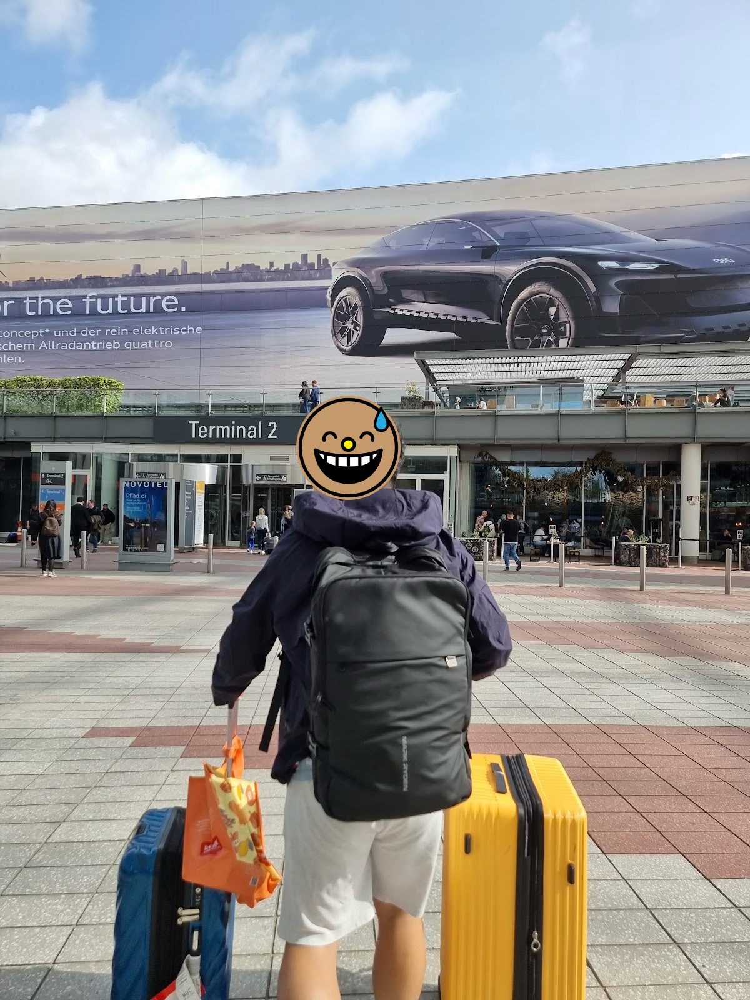
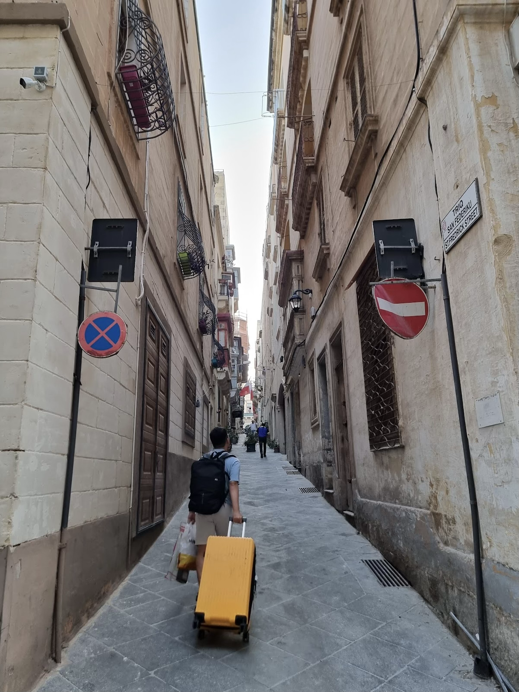
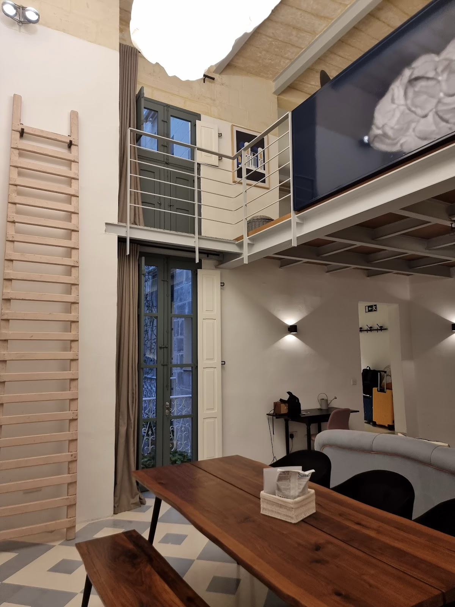
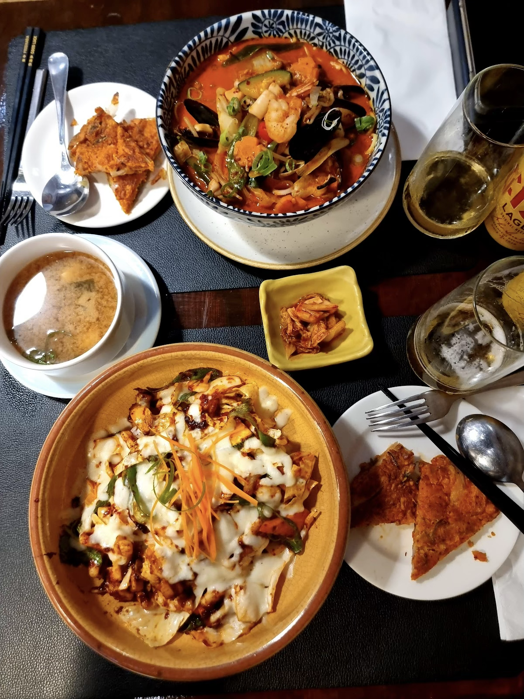
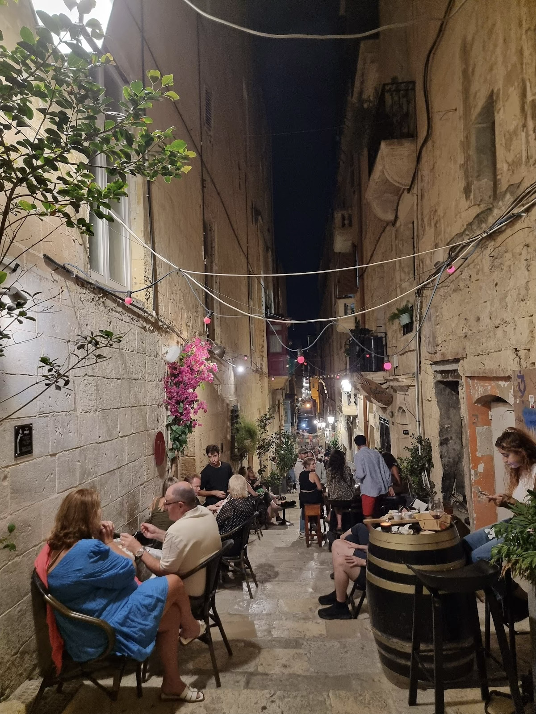
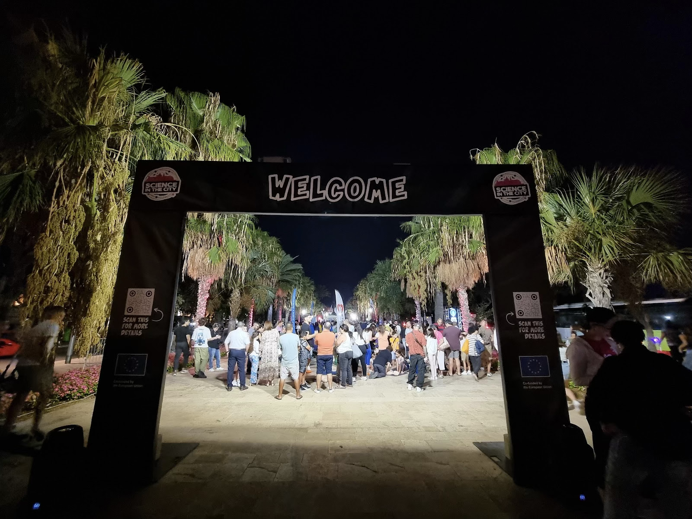
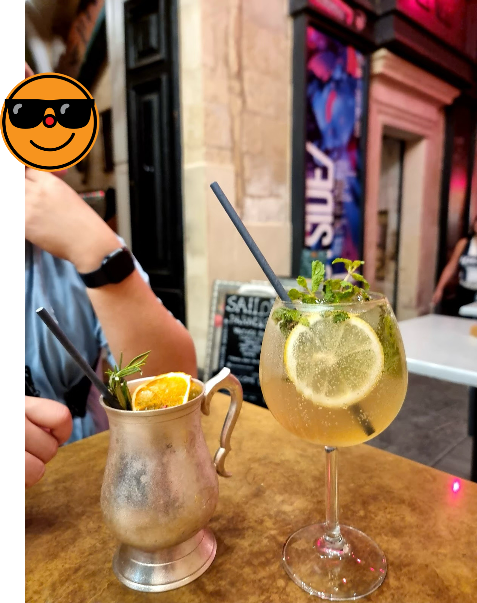
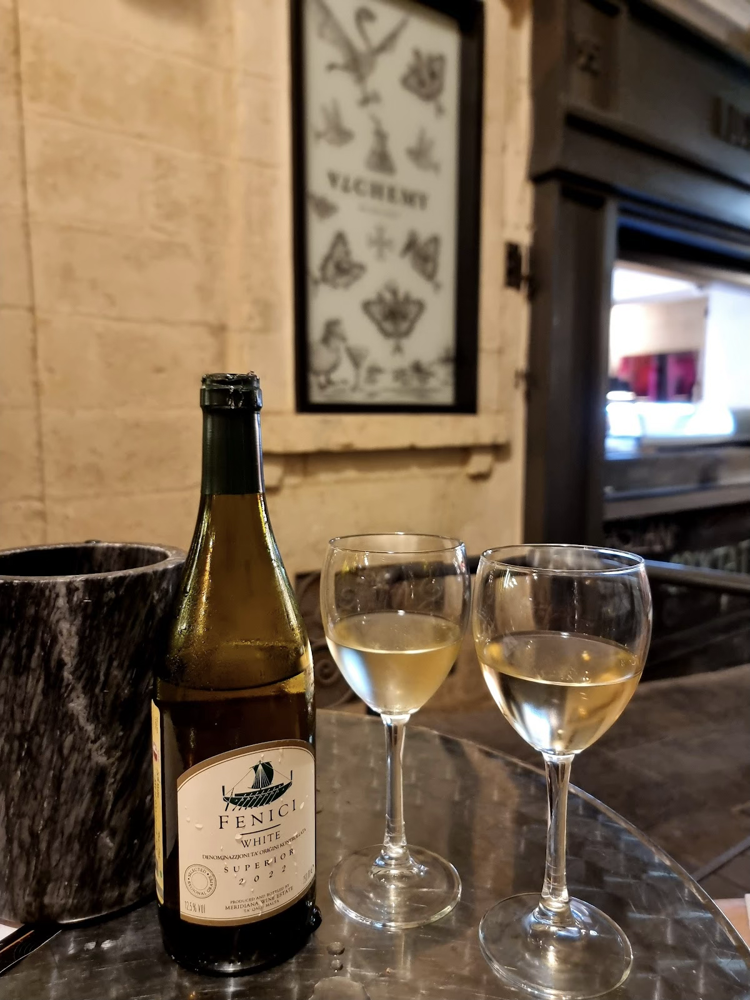

이 날은 옥토버페스트를 마무리하고 몰타로 건너가는 날이었다. 11:00에 체크아웃, 14:40에 몰타로 가는 비행기가 출발 예정이었다. 우리는 전날 힘든 하루를 보냈지만 아홉 시 반쯤부터 일어나서 부지런히 우리의 흔적을 정리했다. 체크아웃 후 리셉션에 짐을 잠깐 맡겨두고, 그동안 나온 페트병, 캔, 유리병 등을 모아다가 마트에서 판트로 바꿔 먹었다. 양이 많지 않아서 2유로밖에 받지 못했다.
유럽 여행을 좀 길게 와 본 적 있는 사람이면 대체로 알겠지만, 판트는 플라스틱 병이나 유리병, 캔 등 재활용 쓰레기를 압착 기계에 넣으면 돈으로 바꿔 주는 시스템이다. 유럽의 모든 나라에 있는 제도는 아니고, 나도 스웨덴과 독일에서만 사용해 봤다. 제품 가격에 판트가 포함되어 있기 때문에 소비자가 판트를 받지 않으면 손해를 보게 되지만, 판트 제도를 시행하는 나라는 보통 판트 기계가 많이 보급돼 있어서 접근성이 좋기 때문에 소비자 입장에서는 굳이 판트를 안 받고 쓰레기를 다른 데다 처리할 이유가 없다. 오히려 재활용 쓰레기도 처리하고 돈도 버는 느낌을 받게 된다. 한국에서는 분리수거도 서양보다 열심히 하는데, 우리도 판트를 도입했으면 좋겠다.
Schwan Locke가 지하철역과 가까웠기 때문에 우리는 뮌헨 공항까지 편하게 갔다. 자동화된 기계로 체크인도 하고 짐도 부치고 게이트를 통과하려 하는데, 독일과 몰타가 모두 EU 소속이라 공항에서 여권 체크를 하지 않았다. 그러니까, 어제 인스부르크에서 flixbus 기사가 내 여권을 체크하지 않은 채 내가 뮌헨까지 돌아왔다면, 나는 그대로 여권 없이 몰타까지 날아갈 수도 있었던 것이다. 다시 한 번 서늘해진 간담을 부여잡으며 여권을 잘 챙기자고 다짐했다.

게이트를 무사히 통과한 우리는 기념품을 조금 산 뒤 밥을 먹으려 했는데, 이쯤 되니 우리는 둘 다 독일 음식에 질려 있었다. 독일 음식이 워낙 어딜 가든 감자 소시지 빵 감자 소시지 햄의 반복이라… 나는 그나마 감자를 좋아해서 조금 먹었지만 H는 결국 식사를 포기하고 얼음에 에스프레소를 부어 아이스 아메리카노를 제조해 마시는 것으로 만족했다. 몰타행 비행기가 지연이 돼서, 로비의 충전기를 옆에 끼고 거의 한 시간 정도 커피를 마시며 멍 때린 것 같다. 화장실도 세월아 네월아 하며 다녀오다가 last call 을 받고서야 게이트를 통과했는데, 우리 뒤로 출입문이 닫히자마자 더 늦게 도착한 아저씨들이 있어서 H가 문을 열어줬더니 대뜸 “xie xie” 하면서 인사를 했다. 순간 우리의 표정이 관리가 안 됐는지 아저씨가 중국 사람들 아니냐고 묻기에 한국인이라고 했더니, 미안하다며 “감사합니다” 하고 우리말로 인사를 했다. 사업차 동아시아에 오간 적이 많아서 인삿말을 알고 있다고 했다.
몰타행 비행기에서는 우리 자리가 양옆이 아니라 창가의 앞뒤 좌석이었다. 비행은 두 시간 정도 걸렸고, 기내식은 없었고 작은 물 한 병과 초콜릿이 전부였다. 비행 시간이 짧다 보니 나는 창가를 내다볼 생각도 없이 그냥 잤는데, 나중에 내려서 들어 보니 H는 옛날에 몰타에서 어학연수를 했던 시절을 추억하며 눈물을 조금 뽑으셨다고 했다.
몰타 날씨는 맑고 햇살은 뜨거웠다. 우리는 외투를 다 가방에 쑤셔넣고 택시를 불러 발레타 숙소로 갔다. 몰타에서는 Bolt 앱으로 택시를 부를 수 있다. 공항에서 숙소까지 편도 요금은 원래 11유로 정도 했지만 내가 Bolt 를 처음 쓰는 거라 첫 주문 쿠폰을 써서 5유로에 결제했다.

발레타는 오래된 도시라 그런지 건물들이 모두 고풍스러웠다. 최소한 외관은 모두 그랬다. 도시 전체가 세계문화유산으로 등록되어 있다던가 하는 이야기를 들은 적이 있는데, 그래서인지 오래돼 보이면서도 관리가 안 되어 있다거나 낡았다거나 하는 느낌은 들지 않았다. 건물 외관뿐 아니라 길거리도 쓰레기나 깨진 블록 없이 깔끔했다. 다만 골목이 좁고 주차된 차들이 많아서 운전하기가 힘들어 보이기는 했다.
우리가 발레타에서 묵은 숙소는 21 Frederick Street 라는 곳이었다. H가 약 30만원/박으로 잡은 숙소였는데, 들어가 보니 대단히 넓고 예쁜 복층 숙소였다. 1층에는 넓은 거실과 주방이 있고 2층에 침대와 욕조와 샤워실이 있었다. 화장실은 1/2층에 하나씩 있었고, 방 바로 옆에는 우리만 쓸 수 있는 세탁기와 건조기와 무료 세제까지 있는 다용도실도 있었다. 인테리어를 한 지 얼마 안 된 것 같았다. 건물 1층은 로비였는데, 공용 주방과 놀이방이 있었다. 공용 주방 냉장고에는 무료 음료수가 채워져 있었고, 주방에 있는 커피머신은 언제든 쓸 수 있었다. 놀이방에는 각종 잡지와 보드게임, TV와 미니바가 있었다. 1층에는 건물 주인이 쓰는 오피스도 있었는데, 주인은 늘 상주하고 있지는 않았지만 어쩌다 우리와 마주치면 반갑게 인사하며 커피를 한 잔씩 내려줬다.

짐을 풀고 숙소에 감탄하는 시간을 보내고, 우리는 밥을 먹으러 나왔다. 아까 독일 음식에 질려서 점심을 대충 먹었기 때문에, 저녁만큼은 맛있는 곳에서 과식을 하리라고 굳게 결심한 차였다. 마침 우리 숙소에서 가까운 곳에 리뷰가 좋은 한식당이 있었다. 상호가 ‘순’ 이라고 했는데, H의 말에 따르면, 5년 전에 몰타에 유일했던 한식당 ’도마’의 사장님이 새로 연 곳이라고 했다. 다행히 자리가 있어서 웨이팅 없이 들어갔다. 메뉴판을 보니 한식이 베이스는 맞긴 한데, 상당히 서양식으로 개량된 것 같았다. H는 오징어 치즈 덮밥, 나는 해물짬뽕을 시키고 김치전을 가운데 깔고, cisk 맥주도 한 캔씩 마셨다.

음식은 생각보다 훨씬 맛있었다. 양도 무지하게 많아서 계획대로 과식을 했다. 김치전은 한국에서 흔히 먹는 것보다 조금 두껍게 부쳐져서 나왔는데도 겉바속촉이 완벽했다. 해물짬뽕은 면이 파스타면이라서 좀 낯설었지만 그 점만 빼면 한국의 맛집에 비교해도 딱히 꿀릴 것 없는 맛이었다. H가 시킨 덮밥이 개중 가장 덜 한식스러운 음식이었는데, 약간 데리야끼 맛이 나서 예상과 많이 달랐지만 그래도 맛있었다. 나는 맵찔이인 주제에 유럽에서 한국인의 가오를 세우겠답시고 spicy please 를 외쳤는데, 먹다 보니 매워서 땀을 삐질삐질 흘려가며 먹었다. cisk 맥주는 딱히 기억에 남는 맛은 아니었다. 몰타는 지중해 한가운데 있다 보니 맥주보다는 와인이 맛있다고 한다.
순 레스토랑은 작은 매장이라서 직원이 몇 없었다. 우리를 맞이한 직원은 젊은 여자였는데, 우리가 한국인이라는 걸 알자마자 왠지 모르게 긴장하더니 주문과 상관없는 본인 이야기를 마구 하기 시작했다. 잘 들어보니 이 사람의 본업은 댄서였다. K팝과 K댄스를 매우 좋아하고, 원밀리언에서 춤을 배우고 싶어서 곧 한국으로 인턴십을 갈 예정인데, 본인은 한국어를 할 줄 모르고 한국 사람들은 영어를 잘 모르는 경우가 많으니 그 점이 걱정된다고 했다. 지중해 한가운데에서 스우파 이야기를 들을 줄은 상상도 못 했던 우리는 굉장히 낯설고 신기한 기분으로 이 친구와 이야기를 했다. 우리는 그나마 영어회화를 할 수 있어서 다행인데, 한국에는 그렇지 못한 사람들이 더 많다는 점이 이 친구에게는 상당히 부담스럽게 느껴지는 모양이었다. 가만 놔두면 한도 끝도 없이 이야기를 할 기세였는데, 매장에 우리 뒤에도 손님이 더 들어왔고 사장님이 눈을 시퍼렇게 뜨고 옆에 있으니 어쩔 수 없었다. 우리는 사실상 그 친구의 말을 거의 듣기만 했기 때문에, 밥을 다 먹고 나오면서도 뭔가 도움을 준 게 없다는 생각에 신경이 쓰였다. 그래도 에너지 넘치는 친구인 것 같으니 결국 잘 해 내리라 믿는다. 화이팅.

밥을 다 먹으니 너무 배불러서 일단 좀 걷기로 했다. 몰타는 치안이 좋은 나라라서 밤길을 걷는 게 부담이 없다. H가 5년 전 몰타에 왔을 때에는 발레타에 온 적은 없었고, 슬리에마나 생 줄리안 같은 다른 지역에 비해 조용하고 재미없는 동네라는 이야기만 들었다고 했다. 그러니까, 우리 둘 다 발레타의 밤은 처음 겪어보는 셈이었다. 한데, 발레타는 밤에 상당히 시끄러운 동네였다. 골목골목마다 야하게 입은 젊은이들이 바글거리고, 건물이 떠나가라 큰 음악을 틀어 놓은 클럽, 펍, 와인 바가 어디에나 있었다. 그렇다고 위험해 보이는 건 아니었고, 우리가 흔히 생각할 수 있는 ’젊은이들의 적당한 밤문화’가 대단히 활발한 정도랄까. 걷다가 괜찮아 보이는 와인바가 있어서 들어가 보려다가 만석이라 튕기기도 했다. 독일은 20~21시면 다 닫던데, 여기는 자정이 기본이고 새벽 3~4시까지 여는 곳도 흔했다. 지중해는 역시 놀기 좋은 곳이다.

발이 아플 때까지 걷다 보니 발레타 입구까지 갔는데, 우연히도 이 날 발레타 게이트 앞에서 무슨 사이언스 페스티벌 같은 걸 하고 있었다. 연구 분야별로 부스를 설치해 놓고 각자 열심히 뭔가를 시연하고 있었는데, 하필 사이언스라니 기분이 묘했다. 재미는 확실히 없어 보였지만, 지중해에서 해양생물학 같은 분야를 연구하면 다이빙도 많이 하고 일도 같이 할 수 있으니 삶의 질이 좋아지려나.. 하는 생각은 했다.

우리는 발레타를 돌고 돌다 결국 아까 밥을 먹은 한식당 옆에 있는 Sailors Paradise 라는 바의 야외 테이블에 앉았다. 우리의 목적은 몰타산 와인을 맛보는 것이었는데, 아쉽게도 이 곳에는 몰타산 와인은 없다고 했다. 기왕 앉은 거 그냥 칵테일이나 한 잔씩 하기로 하고, 모스코 뮬과 HUGO…어쩌고 하는 칵테일을 시켰다. 맛은 그럭저럭 나쁘지 않았는데, 문제는 옆 테이블에 있었다. 옆자리에 아주머니 세 분이 앉아 있었는데, 그 중 한 분이 대단한 골초여서 자리에서 일어날 때까지 쉴 틈 없이 담배 연기를 밥통처럼 뿜어댔다. 테이블 간격도 가까워서 우리는 그 연기를 고스란히 마셔야 했다. 야외라서 연기가 금방 퍼져서 옅어질 줄 알았는데 그건 그 분을 너무 얕본 생각이었다. 우리는 술보다 연기에 먼저 취해서 어질어질해지고 있었다. 그분들이 빨리 일어나지 않았다면 분명 기절했을 것이다. 담배에 관대한 유럽 같으니라고. 그 분들이 떠나자 거짓말처럼 머리가 맑아졌다.

첫 시도는 실패했지만 어쨌든 몰타산 와인은 마셔 보고 싶어서, 바로 옆옆 가게인 Alchemy 라는 술집으로 자리를 옮겼다. 그런데 옮기고 보니 이 가게는 아까 저녁을 먹은 순 레스토랑의 사장님이 하는 곳이었고, 메뉴판을 보니 소주 칵테일을 주력으로 팔고 있었다. 사장님이 아까 밥 먹은 우리를 알아봐서 이야기를 조금 했는데, 놀랍게도 이 분은 한국인이 아니었다. ‘한국말을 못 한다’ 라고만 하고 국적을 정확히 이야기하진 않으셨는데, 아마 중국인이었을 것이다. 다행히 이곳에는 몰타산 와인이 있었다. 추천을 받고 싶어서 직원을 호출했더니 아까 순 레스토랑에서 서빙을 해 준 댄서 직원이 ‘Welcome back’ 이라며 다시 나타났다. 직원들도 매장을 오가며 일하는 모양이었다. 이 친구가 화이트 와인을 한 병 추천해 줘서 별다른 안주 없이 차갑게 마셨는데, 가볍고 달달한 게 꽤 괜찮았다. 너무 달거나 떫거나 하지도 않고 자극적이지 않은 맛이어서 우리 둘 다 만족스럽게 마셨다. 적당히 떠들면서 와인을 다 비웠더니 시간이 많이 늦어져서, 이쯤에서 몰타의 첫날을 마무리하기로 하고 숙소에 돌아가서 잠에 들었다.